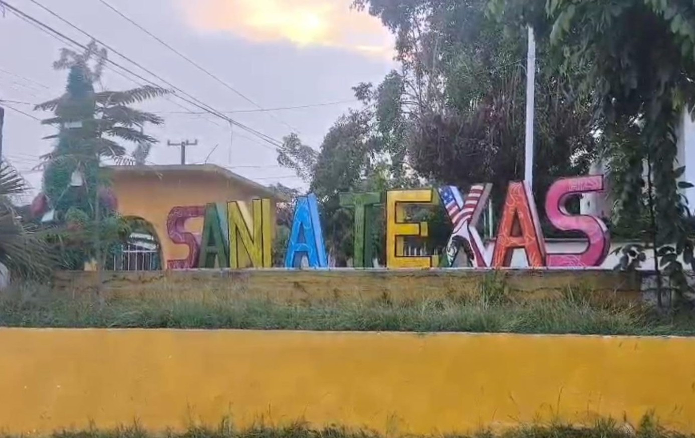

San Antonio, Texas, es una localidad en el municipio de Cosamaloapan de Carpio del estado mexicano de Veracruz. Se encuentra ubicado en la baja cuenca del río Papaloapan, cabecera de la junta auxiliar electoral municipal.
Cuenta con una economía frágil a medianamente estable, está basada en la ganadería y la agricultura, entre otras intermediarias. La principal fuente de ingresos es la agricultura siendo la siembra de caña de azúcar como su principal fuente de empleo; aunque cabe destacar que debido a su localización y a su privilegiado clima cálido húmedo se puede sembrar arroz, maíz, frijol, naranja, mandarina, coco, plátano, mango, calabaza, sorgo entre muchas otras.
